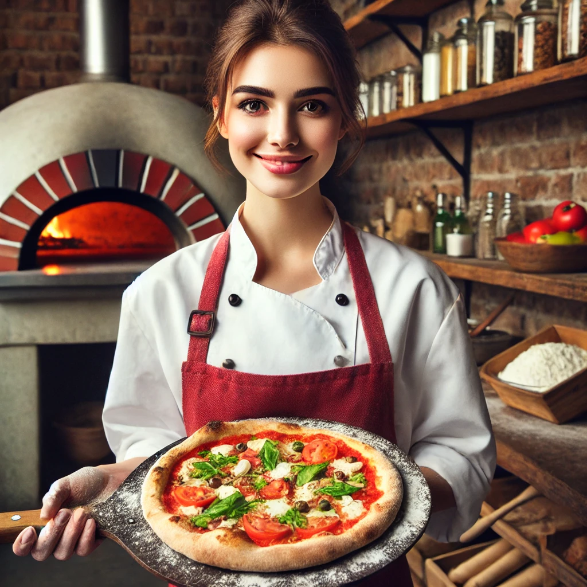
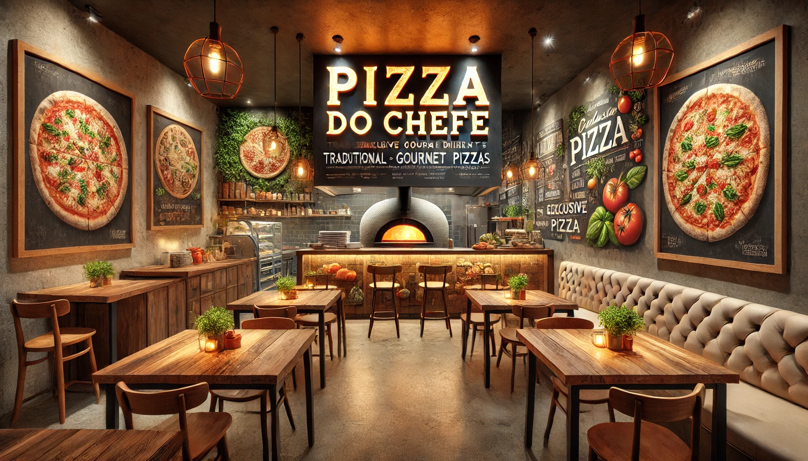
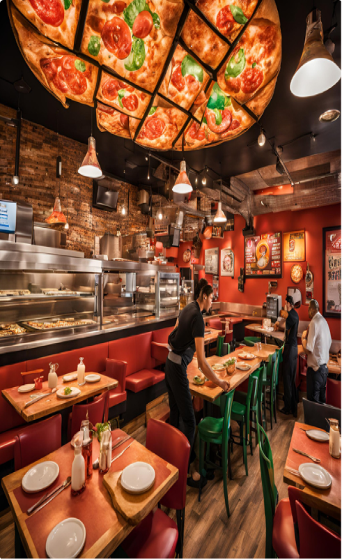
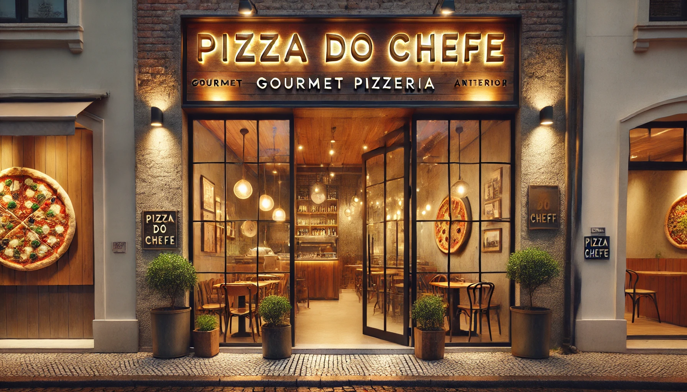

.png)
O Melhor sabor
você encontra
Aqui!
PEÇA AGORA!

Nossa História

Em 2017, uma mulher transformou seu amor pela culinária em um sonho: nasceu a "Pizza do Chefe", um lugar onde cada pizza é mais do que uma receita – é uma experiência. Inspirada pelo desejo de criar algo único, ela optou por ingredientes frescos, de qualidade, e um toque especial gourmet que torna cada mordida inesquecível. Da massa artesanal aos sabores exclusivos do cardápio, tudo é feito com carinho e atenção aos detalhes. Hoje, a "Pizza do Chefe" é o ponto de encontro para os verdadeiros amantes de pizza, aqueles que buscam autenticidade, sabor e um toque caseiro.
VER MAISNosso Espaço
A "Pizza do Chefe" é muito mais do que uma pizzaria; é uma experiência gourmet para amantes de pizza! Fundada em 2017, nossa casa se destaca por pizzas artesanais que elevam os sabores tradicionais a um novo patamar, com ingredientes frescos e um toque exclusivo em cada receita. Aqui, você encontra desde os clássicos até sabores únicos, cuidadosamente preparados para surpreender o paladar.



CONHEÇA MAIS